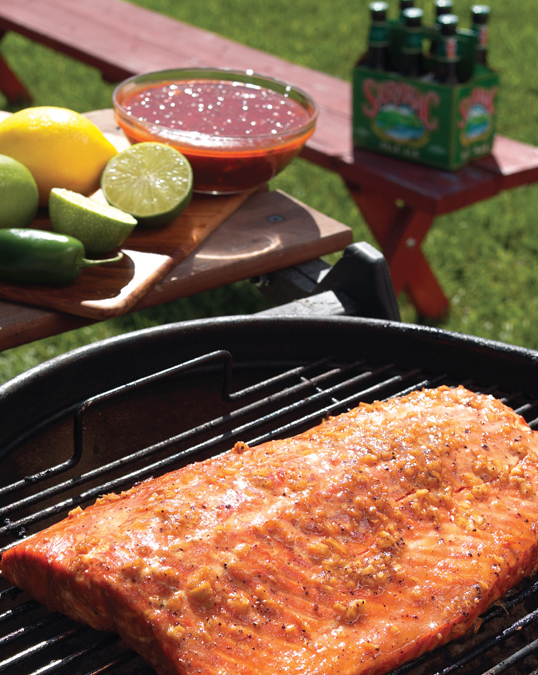

← Back to index
Pan-Fried Cod with Bacon-Fennel BBQ Sauce

Servings: 4
Ingredients
- The Sauce:
- 8 strips regular-slice bacon
- 1 heaping cup slivered red onion
- 1 heaping cup slivered fennel ( see note )
- Pinch each of kosher salt and black pepper
- 1 cup Mutha Sauce
- Juice of ¼ lemon
- The Fish:
- ½ cup flour
- 2 tablespoons Creole Seasoning
- Pinch of kosher salt
- 1 ½ pounds cod fillets, cut into 5-inch pieces
- ½ cup olive oil
- The Garnish:
- 3 tablespoons sliced scallion
Instructions
- Pour off all but 3 to 4 tablespoons of the bacon fat in the pan. Dump in the onions and fennel, seasoning with a pinch of salt and pepper. Sizzle over medium heat til brown and caramelized. Stir in the Mutha Sauce and lemon juice. Keep warm.
- Toss the flour, Creole Seasoning, and a pinch of salt together. Dredge the fish in the mixture til the pieces are well coated.
- Swirl the oil into a heavy skillet and heat it til hot but not smoking. Knock the excess flour off the fish pieces, and slip them into the skillet. Cook for 2 to 3 minutes, til lightly browned. Flip the pieces over and cook another 2 to 3 minutes, til cooked through. With a slotted spatula, transfer the fish to a platter.
- Top each portion with a spoonful of sauce, some bacon crumbles, and some sliced scallions. Serve it right away.